Ceramic Materials
Ceramic bonding and crystal structures, brittle behaviour and Weibull statistics, silicates, glasses and glass-ceramics, and the processing route from powder to sintered part, with the Shuttle tiles and turbine coatings as applications.
Central idea: a ceramic is an inorganic compound of metals and non-metals held together by ionic and covalent bonds, and almost every property follows from those strong, directional or charge-balanced bonds with no free electrons: high stiffness, hardness and melting point, chemical stability, low electrical and thermal conductivity, and brittleness. The crystal structure is set by the ionic character of the bond, the ratio of the cation and anion radii and electroneutrality, which together decide the coordination number and therefore the structure type (CsCl, NaCl, zinc blende, fluorite, perovskite, corundum, the silicates). Because ceramics cannot deform plastically, their strength is governed by pores and cracks, it scatters from specimen to specimen (Weibull statistics) and it is much higher in compression than in tension. Glasses are the amorphous ceramics, built on the silica network and tuned by modifiers and intermediates. Ceramics cannot be cast or forged like metals, so they are made from powders: synthesis, conditioning, shaping (dry, wet, plastic or additive), drying or debinding, and sintering, where diffusion turns a porous compact into a dense part. Glasses are instead shaped hot, through their viscosity, and strengthened by tempering.
This page follows the two official sessions of Topic 8 slide by slide. Part I covers the structure and properties of ceramics and glasses (Session 16, Slides 1 to 32) and Part II their processing and applications (Session 18, Slides 1 to 43). Every section names the slides it comes from. Figures are copied from the slides as PNG crops, and each caption names its slide; the generic product photographs and the video stills of the slides are not reproduced. Anything that is not printed on the slides is marked as an extension. The problems of the sheet Problems T8_CeramicMaterials (crystal structures, densities and packing factors) are solved on the problems page of this topic.
Part I — Structure and Properties of Ceramics (Session 16, Slides 1–32)
§ 1 Introduction and general properties [Session 16 Slides 1-3]
Slide 1 gives the agenda of the session: introduction, structure of ceramic materials, mechanical properties of ceramic materials, and glasses.
Ceramic materials are inorganic materials composed of metals and non-metals bonded by ionic and/or covalent bonds. They can be crystalline or amorphous (the amorphous ones are the glasses of Section 19), and their raw materials are abundant: sand and rock are mostly silica and silicates [Session 16 Slide 2].
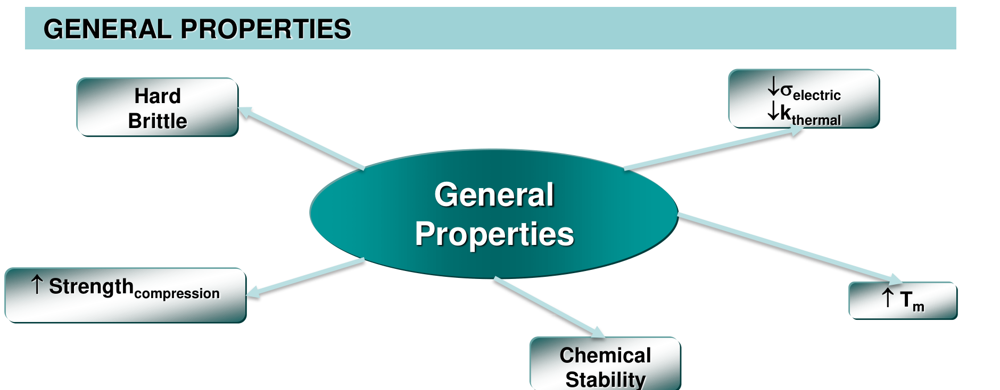
The general properties of the mind map (hard and brittle, low electrical and thermal conductivity, high compressive strength, high melting point, chemical stability) are explained on Slide 3 by the bond, one property at a time:
| Property | Reason given on the slide |
|---|---|
| High Young's modulus and high melting point | strong bonds (covalent and/or ionic) |
| Hard, brittle, high compressive strength | strong bonds (covalent and/or ionic) |
| Limited electrical and thermal conductivity | absence of an electronic cloud |
| Low thermal shock resistance | high elastic modulus and low thermal conductivity |
| Refractory | stability at high temperature (no creep) |
| Resistance to oxidation and corrosion | chemical stability |
The table reads as a chain of cause and effect. The same strong bond that makes the lattice stiff and hard to melt also forbids the motion of dislocations, so the material cannot relieve a stress concentration by yielding and breaks instead: it is brittle. With all the valence electrons tied in bonds there is no free-electron gas, so neither charge nor heat is carried by electrons. And the thermal shock resistance of Topic 7, $TSR = \sigma_f k/(E\alpha_l)$, is low because $E$ is high and $k$ is low. For aerospace use the trade is clear: ceramics bring temperature capability, stiffness, wear and oxidation resistance, and the designer must live with brittleness.
§ 2 Classification [Session 16 Slide 4]
The slide groups the ceramics into three families [Session 16 Slide 4]:
- Glasses: SiO₂ plus additives.
- Traditional ceramics (made from clay): porous ceramics (bricks, pottery, china), compact ceramics (porcelain, earthenware) and refractory ceramics. Their raw materials are clay, Al₂O₃·SiO₂·H₂O, silica, SiO₂, and feldspar, K₂O·Al₂O₃·6SiO₂.
- Engineering or advanced ceramics: refractory ceramics (SiC, Al₂O₃, ZrO₂, BeO, MgO), piezoelectrics and ferroelectrics (BaTiO₃, SrTiO₃), electro-optics (LiNbO₃), abrasive ceramics (the nitrides and carbides Si₃N₄ and SiC), molecular membranes, superconducting ceramics (YBa₂Cu₃O₇) and biomaterials (hydroxyapatite).
The traditional ceramics are defined by their natural raw materials and low cost; the advanced ceramics by synthetic, pure powders and by one controlled property (refractoriness, a dielectric or piezoelectric response, hardness). Part II shows that the two families also follow different processing routes.
§ 3 Bonding in ceramics: ionic and covalent character [Session 16 Slide 5]
The bond between the ions of a ceramic is ionic, covalent or both. Pauling's relation gives the percentage of ionic character from the difference of electronegativities $X_A - X_B$ of the two elements [Session 16 Slide 5]:
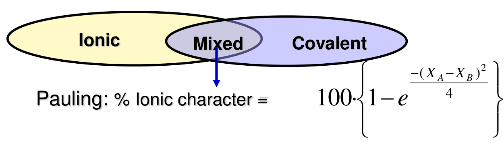
| Ceramic | Bond | $X_A - X_B$ | % ionic | % covalent |
|---|---|---|---|---|
| MgO | Mg-O | 2.3 | 73 | 27 |
| Al₂O₃ | Al-O | 2.0 | 63 | 37 |
| SiO₂ | Si-O | 1.7 | 51 | 49 |
| Si₃N₄ | Si-N | 1.2 | 30 | 70 |
| SiC | Si-C | 0.7 | 11 | 89 |
The slide prints the differences with decimal commas. Each row follows from the formula: for MgO, $(2.3)^2/4 = 1.3225$ and $100(1 - e^{-1.3225}) = 73$; for SiC, $(0.7)^2/4 = 0.1225$ and $100(1 - e^{-0.1225}) = 11.5$ (the check is an extension). The percentage of ionic and covalent character determines the crystal structure: the more ionic the bond, the more the structure is a packing of charged spheres governed by size and charge (Sections 4 to 9); the more covalent, the more it is governed by the number and direction of the bonds (Section 10).
§ 4 Ionic structures: radius ratio, electroneutrality and coordination [Session 16 Slide 6]
An ionic structure is a packing of anions with the cations in the interstitial sites. The ions pack densely to lower the total energy, and the Bravais lattice that forms depends on three things [Session 16 Slide 6]:
- The sizes of the cation and the anion, with $r_{cation} < r_{anion}$. The relation between the radii when anion and cation are in contact gives the minimum ratio for each arrangement.
- Electroneutrality: the crystal as a whole carries no charge, which fixes the ratio of cations to anions.
- The coordination index (C.I.), the number of anions around a cation. Increasing the C.I. increases the stability.
The sketch of the slide explains the rule of contact. A cation that is too small for its cage of anions rattles inside it, the anions touch each other and repel, and the arrangement is unstable; a cation that touches all its anions is stable, and so is a larger one that pushes the anions apart. The stable choice is therefore the highest coordination whose cage the cation can still fill:
| $r_C/r_A$ | Anions around the central cation, C.I. | Structure |
|---|---|---|
| 0.732-1.0 | 8, corners of a cube | CsCl |
| 0.414-0.732 | 6, corners of an octahedron | rock salt (NaCl) |
| 0.225-0.414 | 4, corners of a tetrahedron | zinc blende (ZnS) |
| 0.155-0.225 | 3, corners of a triangle | (not given) |
| < 0.155 | 2 | (not given) |
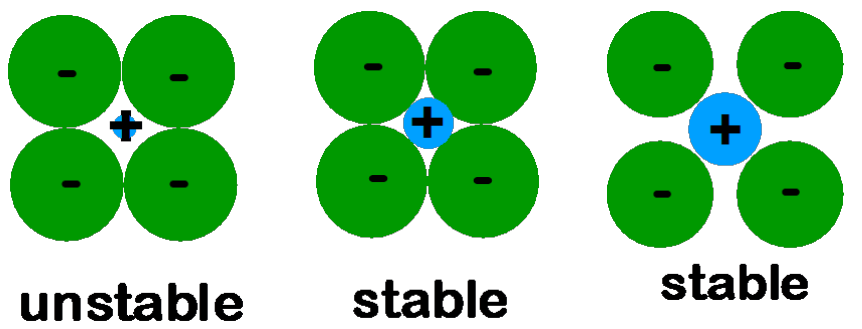
Where the limits come from (extension). Each limit is the ratio at which a cation exactly touches anions that also touch each other. For the octahedron, four anions in a square of side $2r_A$ surround the cation, and the diagonal of the square is $2r_A + 2r_C$: $2\sqrt2\,r_A = 2r_A + 2r_C$, so $r_C/r_A = \sqrt2 - 1 = 0.414$. For the cube the body diagonal gives $2\sqrt3\,r_A = 2r_A + 2r_C$, so $r_C/r_A = \sqrt3 - 1 = 0.732$. For the tetrahedron, $r_C/r_A = \sqrt{3/2} - 1 = 0.225$. The slide spells the third structure "zincbelnde"; it is zinc blende.
§ 5 AX structures: CsCl, rock salt and zinc blende [Session 16 Slides 7-9]
5.1 Caesium chloride, CsCl [Session 16 Slide 7]
The Cl⁻ ions sit at the corners of the cube and the Cs⁺ ion at the centre. The radius ratio places it in the cubic range [Session 16 Slide 7]:
The ceramics with this structure are halides: CsBr, TlCl, TlBr. The slide insists that this is not a BCC structure: the corner and the centre hold two different ions, so the lattice is simple cubic with a basis of two ions (one Cl⁻ and one Cs⁺ per cell, since the eight corners give $8\times\frac18 = 1$). The slide writes "corners of the cubie" for the corners of the cube.

5.2 Rock salt, NaCl [Session 16 Slide 8]
The larger Cl⁻ anions form an FCC lattice and the smaller Na⁺ cations fill all the octahedral interstitial sites (the slide writes "Na"). There are 4 Na⁺ and 4 Cl⁻ per unit cell, and C.I. = 6 [Session 16 Slide 8]:
The count follows from the positions (extension): Cl⁻ at the 8 corners and 6 face centres, $8\times\frac18 + 6\times\frac12 = 4$; Na⁺ at the 12 edge centres and the body centre, $12\times\frac14 + 1 = 4$. The cation and anion touch along the cube edge, so $a = 2(r_C + r_A)$. Oxides with this structure: MgO, CaO, FeO, NiO.
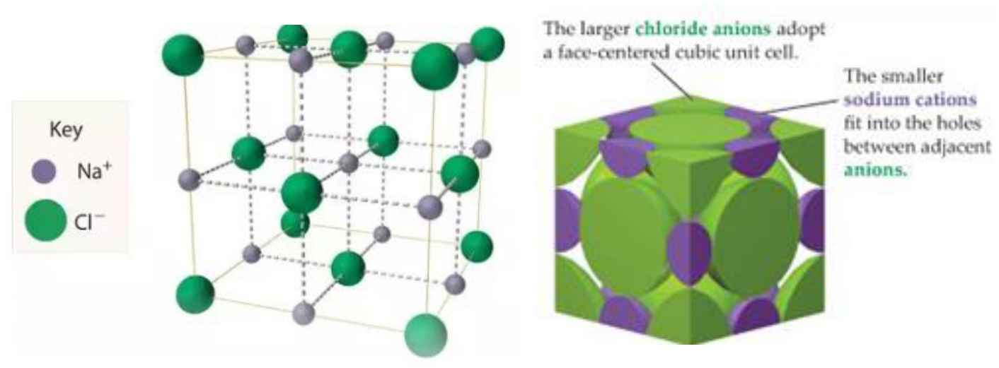
5.3 Zinc blende, ZnS [Session 16 Slide 9]
The S²⁻ ions form an FCC lattice and the Zn²⁺ ions fill half of the tetrahedral sites; there are 4 Zn²⁺ and 4 S²⁻ per unit cell [Session 16 Slide 9]:
By Pauling's relation the Zn-S bond is about 87 % covalent (as printed), so the tetrahedral coordination also suits the directional covalent bond. The ceramics with this structure are semiconductors: CdS, HgTe, NiAs, SiC, GaAs. A tetrahedral site sits a quarter of the way along the body diagonal, so the ions touch along that diagonal: $a\sqrt3/4 = r_C + r_A$ (extension, used in Problem 1).

§ 6 AX₂ structures: fluorite and anti-fluorite [Session 16 Slides 10-11]
6.1 Fluorite, CaF₂ [Session 16 Slide 10]
The Ca²⁺ ions sit on the FCC lattice points and the F⁻ ions fill all the tetrahedral sites, giving 4 Ca²⁺ and 8 F⁻ per cell, the ratio 1:2 of the formula [Session 16 Slide 10]:
Electroneutrality ties the two coordination numbers: each Ca²⁺ has 8 F⁻ neighbours and each F⁻ has 4 Ca²⁺, and $4\ \text{Ca} \times 8 = 8\ \text{F} \times 4$ bonds per cell (extension). Oxides with this structure: UO₂, ThO₂, CeO₂ and YSZ (yttria-stabilized zirconia, the thermal barrier of Section 48).

6.2 Anti-fluorite, Li₂O [Session 16 Slide 11]
The anti-fluorite structure exchanges the roles of the ions: the O²⁻ anions sit on the FCC lattice points and the Li⁺ cations fill all the tetrahedral sites, so there are 8 Li⁺ and 4 O²⁻ per cell, and C.I.(Li⁺) = 4, C.I.(O²⁻) = 8 [Session 16 Slide 11]. The slide lists Na₂O, K₂O and Mg₂Si as examples.
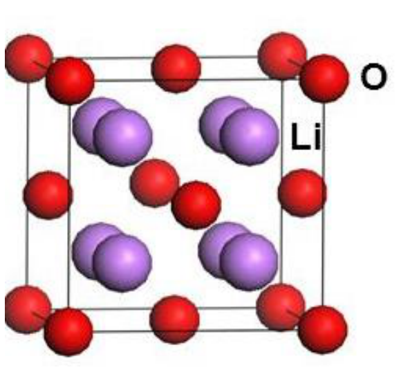
The slide writes "Li²⁺: all tetrahedral interstitials" and "O⁻²⁻"; the ions are Li⁺ and O²⁻, as its own line "8 Li⁺ and 4 O⁻²⁻ per unit cell" gives for the cation, and as the charge balance of Li₂O requires for the anion. The radius ratio printed on the slide, $r_{Ca^{2+}}/r_{F^-} = 0.752 \Rightarrow$ C.I. = 8, is the one of fluorite copied from Slide 10; in Li₂O the cation is tetrahedral (C.I. = 4) and the coordination 8 belongs to the anion. Mg₂Si, listed among the "oxides", is a silicide with the same anti-fluorite arrangement.
§ 7 Perovskite, ABO₃ [Session 16 Slide 12]
In the perovskite structure two cations of very different size ($r_A \gg r_B$) share the cell with oxygen. In CaTiO₃ the large Ca²⁺ and the O²⁻ ions together form an FCC packing: Ca²⁺ at the corners and O²⁻ at the face centres. The small Ti⁴⁺ occupies 1/4 of the octahedral sites, the one at the body centre, which is surrounded only by oxygen. C.I.(Ti⁴⁺) = 6 and C.I.(Ca²⁺) = 12, and there are 3 O²⁻, 1 Ca²⁺ and 1 Ti⁴⁺ per unit cell [Session 16 Slide 12].
The counts are those of the positions (extension): Ca at the corners, $8\times\frac18 = 1$; O at the face centres, $6\times\frac12 = 3$; Ti at the body centre, 1. Of the four octahedral sites of an FCC cell (the body centre and the 12 edge centres, $1 + 12\times\frac14 = 4$), only the body centre has six oxygen neighbours; the edge centres touch Ca²⁺ ions, so Ti⁴⁺ takes one site in four. Because Ca²⁺ and O²⁻ form the close packing together, they touch along the face diagonal, $a\sqrt2 = 2(r_{Ca} + r_O)$ (used in Problem 2).

The TiO₆ octahedra share their corners and build a three-dimensional framework, with the large A cations in the holes between them.
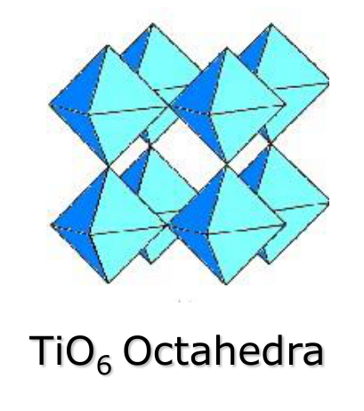
The ceramics with this structure are BaTiO₃, CaTiO₃, SrTiO₃, PbZrO₃, KNbO₃ and LiNbO₃. They include the ferroelectric materials (Section 16) and compounds with magnetic and superconducting properties (YBa₂Cu₃O₇).
The slide writes "C.I.(Ti²⁺): 6" and "1 Ca⁺"; the ions are Ti⁴⁺ (as in its own line "Ti⁴⁺: 1/4 octahedral sites") and Ca²⁺. With Ca²⁺, Ti⁴⁺ and three O²⁻ the cell is neutral: $+2 + 4 - 3\times2 = 0$.
§ 8 Corundum, Al₂O₃ [Session 16 Slide 13]
In corundum (alumina) the O²⁻ ions form an HCP packing and the Al³⁺ ions fill 2/3 of the octahedral sites. The coordination is 6 for both ions [Session 16 Slide 13]. The slide counts 6 O²⁻ on the HCP lattice points of its cell and 4 Al³⁺ ions in the octahedral sites. Two thirds is the fraction that electroneutrality demands (extension): an HCP packing has one octahedral site per anion, so 6 O²⁻ give 6 sites, and the charge $6\times(-2) = -12$ is balanced by $4\times(+3) = +12$, that is, 4 Al³⁺ in 4 of the 6 sites. Other ceramics with this structure: Cr₂O₃ and Fe₂O₃.
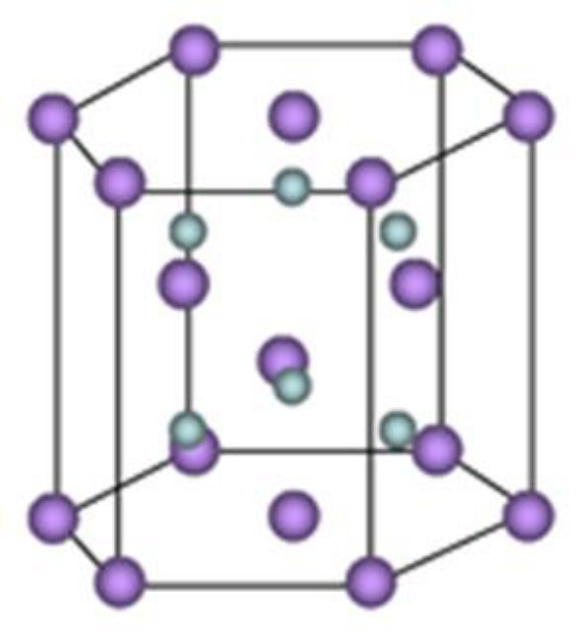
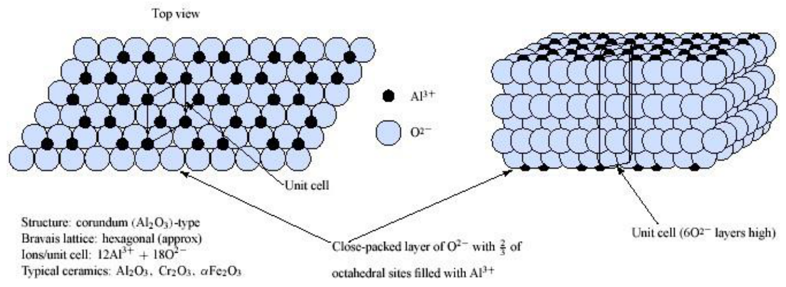
The bullets give 6 O²⁻ and 4 Al³⁺ per unit cell, while the caption of the lower figure gives 12 Al³⁺ + 18 O²⁻ per cell. Both keep the ratio 2:3 of Al₂O₃. The caption describes the full hexagonal cell of corundum, which is "6 O²⁻ layers high" (its own caption), three times the two-layer HCP prism of the upper figure; that reading is an extension.
§ 9 Summary of the common ceramic crystal structures [Session 16 Slide 14]
| Structure | Type | Anion packing | C.I. cation | C.I. anion | Examples |
|---|---|---|---|---|---|
| Rock salt (sodium chloride) | AX | FCC | 6 | 6 | NaCl, MgO, FeO |
| Caesium chloride | AX | simple cubic | 8 | 8 | CsCl |
| Zinc blende (sphalerite) | AX | FCC | 4 | 4 | ZnS, SiC |
| Fluorite | AX₂ | simple cubic | 8 | 4 | CaF₂, UO₂, ThO₂ |
| Perovskite | ABX₃ | FCC | 12 (A), 6 (B) | 6 | BaTiO₃, SrZrO₃, SrSnO₃ |
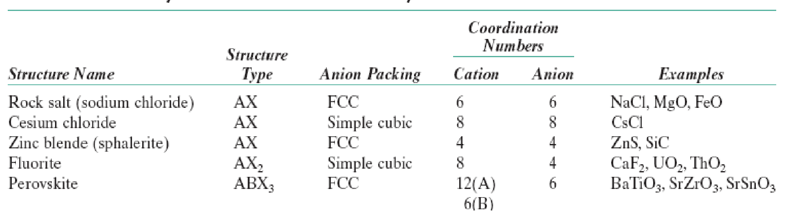
The table on the slide starts with a cut-off line above its header (two stray marks); the five rows are complete. The "simple cubic" anion packing of fluorite describes the F⁻ ions: they fill all the tetrahedral sites of the FCC Ca²⁺ lattice and so form a simple cubic array of edge $a/2$, with a Ca²⁺ ion in every other cube. It is the same structure as the "FCC Ca²⁺ with F⁻ in all tetrahedral sites" of Slide 10, seen from the anions (extension).
§ 10 Covalent ceramics [Session 16 Slide 15]
The covalent ceramics are structural ceramics. Their structure follows the directional bonds rather than the packing of spheres [Session 16 Slide 15]:
- Diamond has the zinc blende type of structure with one element. Each C atom is $sp^3$ hybridized and bonded to four others at the corners of a tetrahedron (C.I. 4), and the bond is 100 % covalent. Diamond has very high wear resistance, hardness and tensile strength, and it is an insulator. The cell has the interior atoms a quarter of the way along the body diagonals, two atoms per lattice point of the FCC lattice.
- SiC has a diamond-type structure, with an 89 % covalent bond (Section 3). It has good abrasive properties, high hardness and is chemically inert.
- Si₃N₄ is used for cutting elements, blades and rotors. Si is $sp^3$ with C.I. 4 (SiN₄ tetrahedra) and N is $sp^2$ with C.I. 3 (each N bonded to 3 Si). It is an open structure with a 70 % covalent bond.

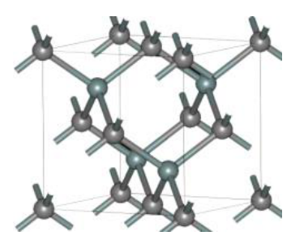
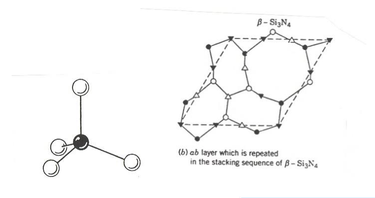
The coordination numbers are set by the hybrid orbitals, not by the radius ratio: four $sp^3$ orbitals point to the corners of a tetrahedron, three $sp^2$ orbitals lie in a plane at 120°. A covalent network with low coordination cannot pack densely, which is why Si₃N₄ is "open" and light. The slide writes "CC₄" for the CC₄ tetrahedral unit and "spherullite" for the zinc blende (sphalerite) type of SiC.
§ 11 Hardness and stiffness [Session 16 Slide 16]
Ceramics are very hard solids, and the covalent ones are harder than the ionic ones: diamond and SiC are harder than Al₂O₃ and ZrO₂ [Session 16 Slide 16]. Their elastic modulus does not depend on the time the load is applied ($E \neq f(t)$, unlike polymers), and $E_{ceramics} > E_{metals}$ because of the bond type, so they are stiffer. With a low density as well, the specific modulus $E/\rho$ is high, which is why ceramics are used in the form of fibres in composite materials.
| Material | $E$ (GPa) | $\rho$ (Mg/m³) | $E/\rho$ (GPa per Mg/m³) |
|---|---|---|---|
| Steels | 210 | 7.8 | 27 |
| Al alloys | 70 | 2.7 | 26 |
| Alumina, Al₂O₃ | 390 | 3.9 | 100 |
| Silica, SiO₂ | 69 | 2.6 | 27 |
| Cement | 45 | 2.4 | 19 |
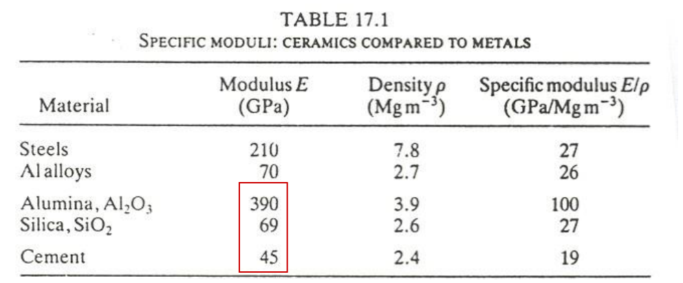
Alumina is the striking row: its specific modulus is almost four times that of steel or aluminium ($390/3.9 = 100$ against $210/7.8 = 27$), so for the same mass a ceramic fibre carries far more stiffness. Silica and cement are not stiffer per unit mass than the metals; the advantage belongs to the dense, strongly bonded oxides and carbides. The stress-strain chart compares alumina and glass: both are straight lines to fracture, alumina reaching about 240 MPa at a strain near 0.0007 and glass about 60 MPa near 0.0009 (read from the chart).
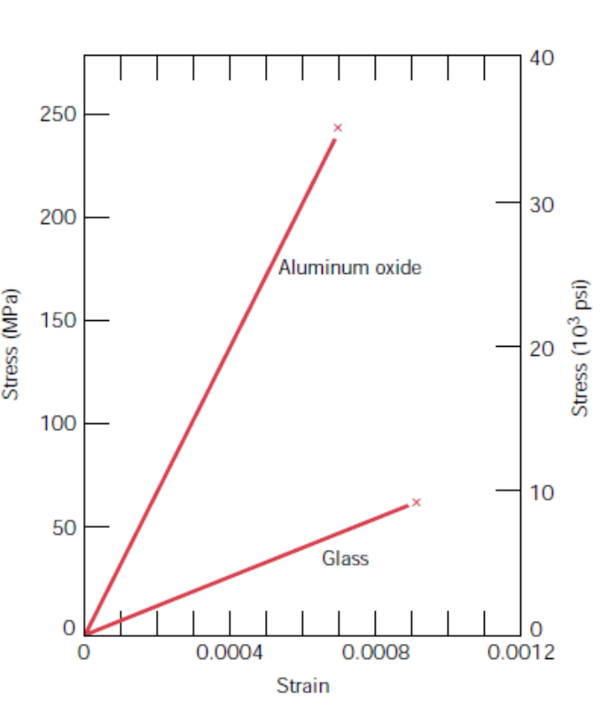
§ 12 Mechanical behaviour and porosity [Session 16 Slide 17]
The mechanical properties of ceramics show a large variability from sample to sample, and the reason is porosity, which acts as a stress concentrator. Pores form during fabrication (bad sintering, Part II), and the rupture is brittle and catastrophic: the strength is a function of the size and the volume fraction of the pores. At room temperature ceramic materials break before any plastic deformation occurs, so [Session 16 Slide 17]
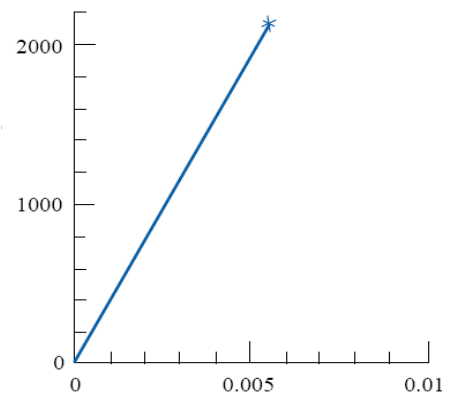
The two charts of the slide show how strongly porosity costs. The flexural strength falls from about 200 MPa for a dense material to about 50 MPa at a porosity of 0.4 to 0.5, and the elastic modulus falls steadily to zero as the porosity tends to 1.
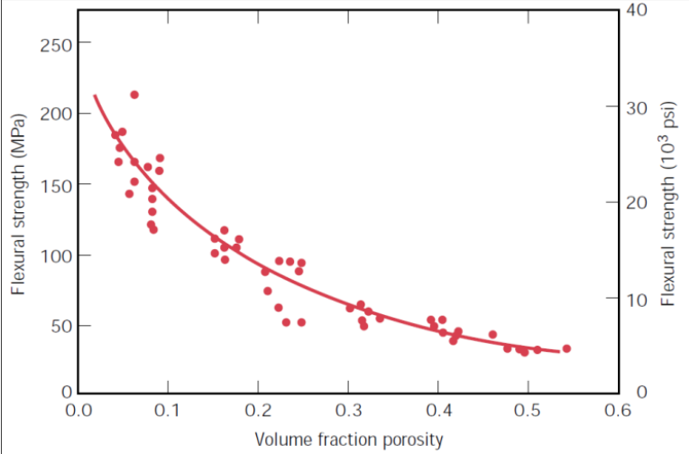
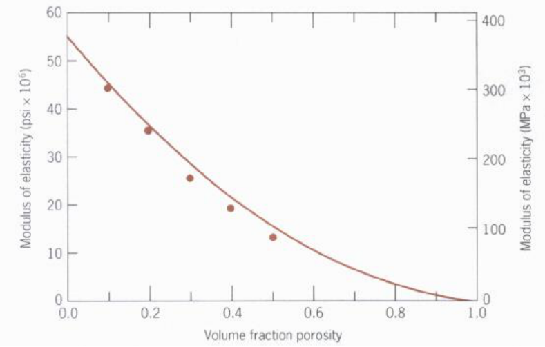
The mechanism is the one of Topic 5: a pore or a crack concentrates the stress at its tip, and in a metal the material at the tip yields and blunts it, but in a ceramic no dislocation moves, so the local stress reaches the bond strength and the crack runs. The modulus falls for a simpler reason: a pore carries no load, so less solid section takes the same force.
§ 13 Testing the mechanical properties [Session 16 Slides 18-19]
13.1 Tension and compression [Session 16 Slide 18]
A tensile test is difficult to perform on a ceramic: gripping the specimen with clamps produces cracks, and the cracks propagate. Under tension a crack perpendicular to the load opens, and the first one that reaches its critical size runs unstably across the specimen, so the measured $\sigma_{TS}$ is low [Session 16 Slide 18].
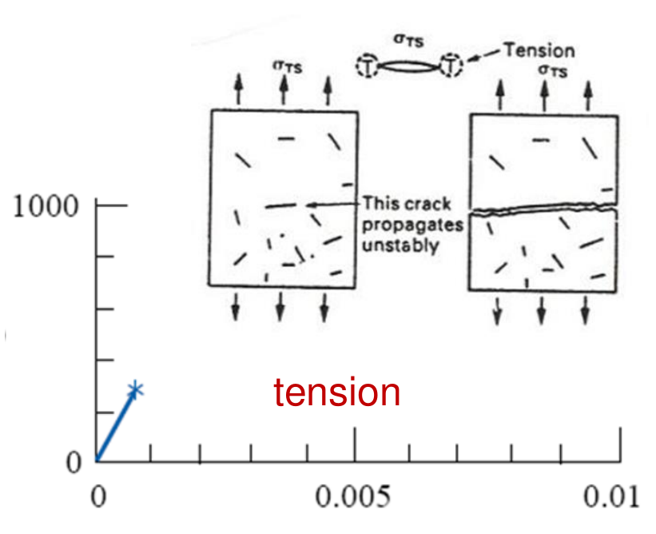
A compression test is simpler, it concentrates less stress at the defects and its results scatter less. Under compression the cracks propagate stably: they grow parallel to the load, each one stops, and many must link before the specimen fails, so the compressive strength $\sigma_C$ is much higher (on the same axes, without units, the compression line reaches about 2000 while the tension line stops at a small fraction of 1000).
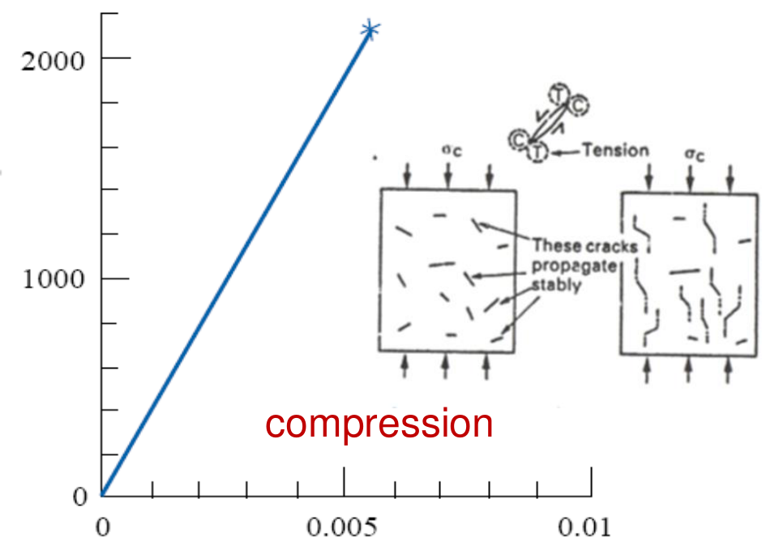
13.2 Bending: the modulus of rupture [Session 16 Slide 19]
The standard test for ceramics is the three-point bending test. Under the central load the top surface of the beam is in compression and the bottom surface in tension; the beam breaks from the bottom, and the stress at fracture is the flexural strength or modulus of rupture (MOR) [Session 16 Slide 19]. For a span $L$, a load at fracture $F_f$, and a rectangular section of width $b$ and depth $d$ or a circular section of radius $R$:

| Material | MOR (MPa) |
|---|---|
| SiO₂ glass | 70 |
| MgO | 200 |
| ZrO₂ | 500-1000 |
| Si₃N₄ | 500-1000 |
Origin of the formulas (extension). The maximum bending moment is at mid-span, $M = (F_f/2)(L/2) = F_f L/4$, and the bending stress at the outer fibre is $\sigma = Mc/I$. For the rectangle, $c = d/2$ and $I = bd^3/12$: $\sigma = \dfrac{(F_fL/4)(d/2)}{bd^3/12} = \dfrac{3F_fL}{2bd^2}$. For the circle, $c = R$ and $I = \pi R^4/4$: $\sigma = \dfrac{(F_fL/4)R}{\pi R^4/4} = \dfrac{F_fL}{\pi R^3}$. Units: $\text{N}\cdot\text{m}/\text{m}^3 = \text{Pa}$.
The slide prints the rectangular case as $3F_fL/(2bd)$, without the square on $d$. That expression has units of N/m, not of stress; the derivation above gives $3F_fL/(2bd^2)$. The circular case is printed correctly. The slide also writes "Stregth" for strength.
§ 14 Scatter of strength: the Weibull distribution [Session 16 Slide 20]
For ceramic materials the UTS, or $\sigma_{fracture}$, varies from specimen to specimen even under identical testing conditions, because each specimen contains a different largest flaw. The dispersion is described by the Weibull distribution [Session 16 Slide 20]:
Here $x$ is the strength, $x_0$ the strength below which no specimen fails, $\lambda$ a scale parameter and $k$ the Weibull modulus. A lower $k$ means a greater variation, and ceramics are materials with a low $k$. The chart of the slide is the frequency of fracture against strength for a ceramic, a single peak near 650 MPa spread from about 400 to 800 MPa.
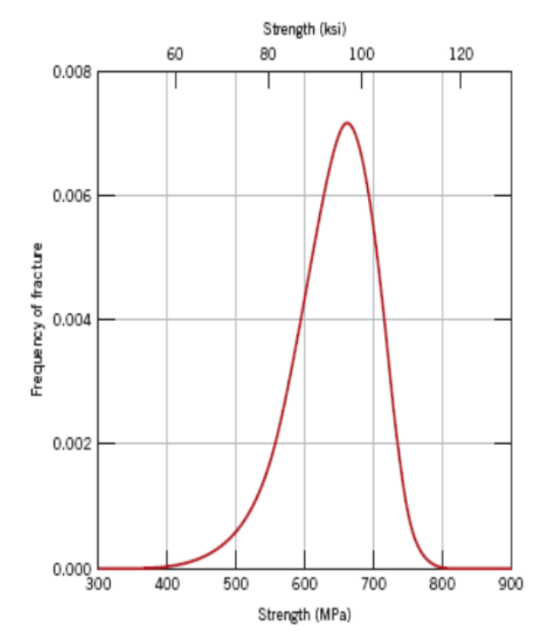
Reading of the distribution (extension). Integrating $f$ from $x_0$ to $x$ gives the probability that a specimen has failed at a stress $x$, $F(x) = 1 - e^{-((x-x_0)/\lambda)^k}$. With $u = ((x-x_0)/\lambda)^k$, $du = (k/\lambda)((x-x_0)/\lambda)^{k-1}dx$, so $\int f\,dx = \int e^{-u}du = -e^{-u}$, and between $x_0$ ($u = 0$) and $x$ Barrow's rule gives $-e^{-u} - (-1) = 1 - e^{-u}$. A large $k$ makes $F$ jump from 0 to 1 over a narrow range of stress; a small $k$ spreads failures over a wide range, so a ceramic part has to be designed for a low probability of failure rather than for one strength value.
§ 15 Thermal shock [Session 16 Slide 21]
Thermal shock is the partial or total fracture of a part caused by changes of temperature. It can be produced by the restriction of expansion or by a rapid $\Delta T$, which creates temporary temperature gradients, then residual stresses, then fracture [Session 16 Slide 21]. The two expressions of the slide are those of Topic 7:
with $E$ Young's modulus (MPa), $\alpha$ the linear coefficient of thermal expansion (°C⁻¹; the slide writes "C⁻¹" and "coefficinet"), $\sigma$ the thermal stress (MPa), $\sigma_f$ the fracture stress (MPa), $k$ the thermal conductivity (W/(m·K)) and $\Delta T$ the thermal gradient. A bar held between walls and heated from $T_1$ to $T_2 > T_1$ cracks exactly as if it had expanded freely and then been compressed back to its length; heating a confined bar puts it in compression.
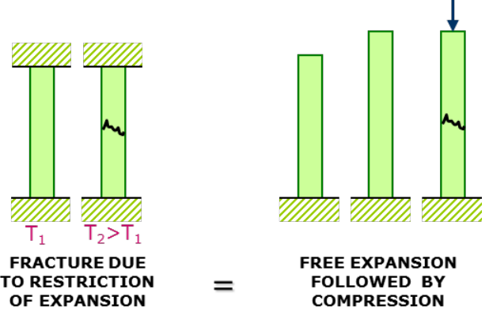
When a hot sheet is cooled quickly from its surfaces (the tempering sketch of the slide), the surface cools and contracts first; the stress profile across the thickness, flat at high temperature, ends after tempering with compression at the surfaces and tension in the interior. The same profile is the basis of tempered glass (Section 45). Ceramics are especially sensitive to thermal shock because their $E$ is high, their $k$ low and their $\sigma_f$ in tension modest (Section 1).

§ 16 Electrical properties: ferroelectric and piezoelectric ceramics [Session 16 Slide 22]
Ceramic materials are usually insulators with high dielectric strength. Some, such as BaTiO₃ and SrTiO₃, are ferroelectric: their unit cells have no centre of symmetry, which results in a small electric dipole in each cell [Session 16 Slide 22]. In BaTiO₃ the cell is slightly tetragonal (0.403 nm against 0.398 nm), the Ti⁴⁺ ion is displaced 0.006 nm from the centre and the O²⁻ ions 0.009 nm, so the centres of positive and negative charge do not coincide.

Ferroelectric compounds show the piezoelectric effect:
- Direct effect: a compressive stress reduces the distance between the dipoles, which causes a difference of electric potential (a sensor, a spark igniter).
- Reverse effect: an applied voltage changes the volume (an actuator, an ultrasonic transducer).
Both effects need the built-in dipole of a cell without a centre of symmetry: in a symmetric cell a deformation moves positive and negative charges equally and no net polarization appears.
§ 17 Silicates: abundance and the SiO₄ tetrahedron [Session 16 Slides 23-24]
17.1 Why silicates [Session 16 Slide 23]
Si and O are the most abundant elements of the earth's crust (about 50 % O and 25 % Si in the chart of the slide, then Al, Fe, Ca, Na, K, Mg and H), and they are the base of the traditional ceramics. Silicates are useful engineering materials because of their low price, great availability and special properties; they are used fundamentally in construction (bricks, cement, glass) and as electrical and thermal insulating materials [Session 16 Slide 23].
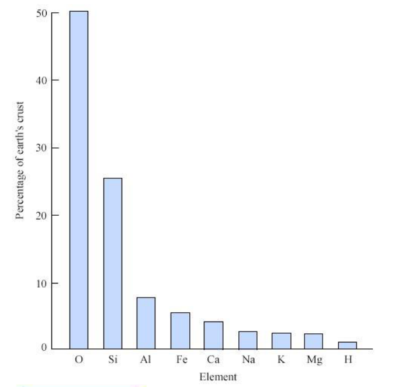
Compositions of some silicate ceramics (wt %; approximate, indicating the primary components, as the footnote of the table says):
| Ceramic | SiO₂ | Al₂O₃ | K₂O | MgO | CaO | Others |
|---|---|---|---|---|---|---|
| Silica refractory | 96 | 4 | ||||
| Fireclay refractory | 50-70 | 45-25 | 5 | |||
| Mullite refractory | 28 | 72 | — | |||
| Electrical porcelain | 61 | 32 | 6 | 1 | ||
| Steatite porcelain | 64 | 5 | 30 | 1 | ||
| Portland cement | 25 | 9 | 64 | 2 |
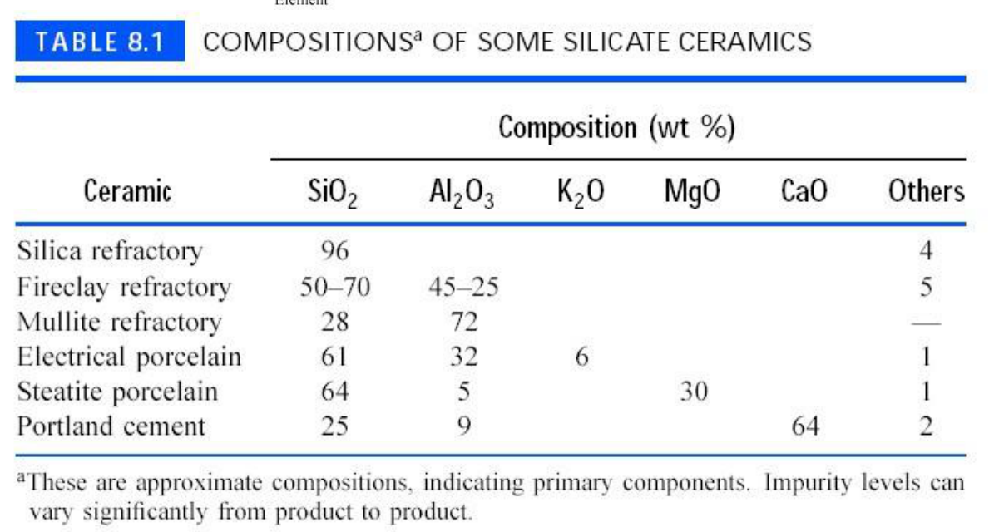
17.2 The basic unit [Session 16 Slide 24]
The basic structural unit of the silicates is the SiO₄⁴⁻ tetrahedron, with Si at the centre and O at the corners. The Si-O bond is 50 % ionic and 50 % covalent (Pauling, Section 3), and the radius ratio $r_C/r_A = 0.29$ lies in the tetrahedral range of Section 4, so the tetrahedral coordination is stable. To raise the packing factor the tetrahedra join at their corners, and the same motif builds a multitude of structures: (a) isolated silicates, (b) ring and chain structures, (c) laminar structures and (d) three-dimensional structures [Session 16 Slide 24].
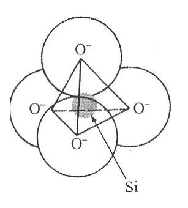
The charge of the unit explains the families (extension): Si⁴⁺ with four O²⁻ leaves $4 - 8 = -4$. Each oxygen shared between two tetrahedra counts half to each, so the more corners are shared, the less negative charge the unit carries and the fewer extra cations are needed: none when all four corners are shared, which is silica, SiO₂.
§ 18 Classification of the silicates and three-dimensional silicates [Session 16 Slides 25-26]
The silicates are classified by how the $[SiO_4]^{4-}$ tetrahedra are ordered [Session 16 Slide 25]:
| Type | Example (as printed) |
|---|---|
| Island | orthosilicates and pyrosilicates (MgSiO₄) |
| Ring | metasilicates: wollastonite (CaSiO₃) |
| Chain | enstatite (MgSiO₃) |
| Sheet | kaolinite Al₂(OH)₄²⁺; talc Mg₃(OH)₄²⁺ |
| 3D | quartz (SiO₂) |
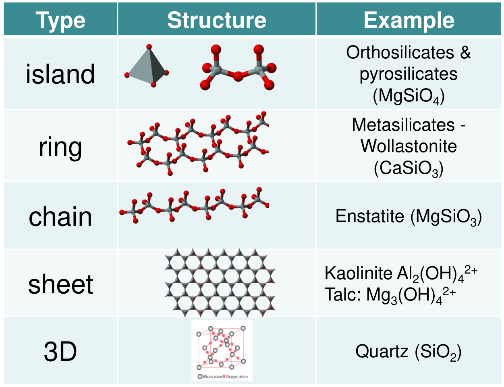
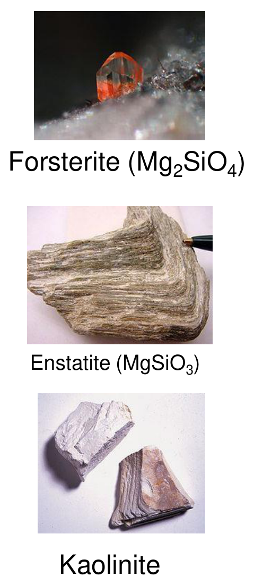
The island example is printed as MgSiO₄, while the photograph on the same slide names forsterite Mg₂SiO₄, the neutral orthosilicate ($2\times(+2) - 4 = 0$). The sheet formulas give only the cation-hydroxide part of each layer, as printed.
Three-dimensional silicates [Session 16 Slide 26]:
- Silica shares all the corners of its tetrahedra, so its unit formula is SiO₂. It presents allotropy, and it is an important component of many traditional ceramics and many types of glass. The phase diagram of the slide (labels in Spanish) shows, at 1 atm, α-quartz up to 573 °C, β-quartz up to 870 °C, β-tridymite up to 1470 °C, β-cristobalite up to 1713 °C and then the liquid.
- Feldspars have a structure similar to silica, but some Al³⁺ replaces Si⁴⁺. Each substitution leaves the lattice with a negative charge, which is compensated by large cations (Na⁺, K⁺, Ca²⁺, Ba²⁺) in interstitial positions. Feldspars are the main component of traditional ceramics.
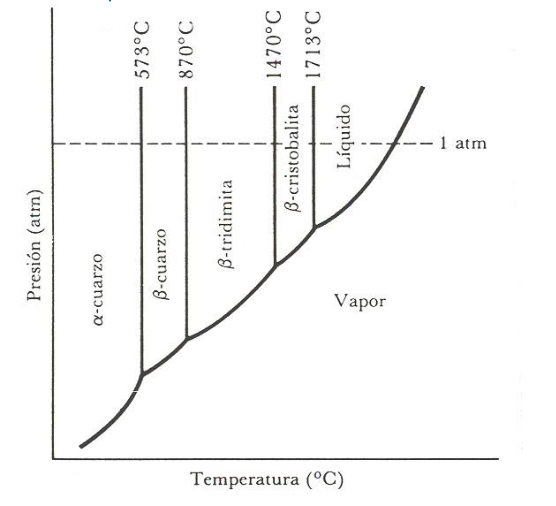
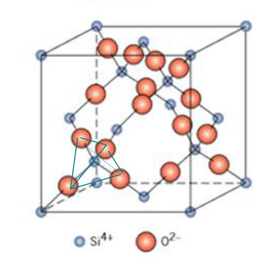
The allotropy of silica matters in service: each change of phase changes the volume, so a silica refractory cycled through 573 °C cracks, the same effect as the allotropic changes of Topic 7 (Section 13.3 there).
§ 19 Amorphous materials and the glass transition [Session 16 Slide 27]
A crystalline solid cooled from the liquid solidifies at the melting (solidification) temperature $T_m$, with a sudden contraction. A glass cooled from the liquid does not crystallize: its viscosity increases continuously and it passes from a plastic state to a rigid state. A glass is an amorphous inorganic solid with the structure of a liquid; it hardens and becomes rigid as the temperature falls without crystallization, and it has no distinct melting or freezing point [Session 16 Slide 27].
- $T_g$, the glass transition temperature, is the temperature at which the glass phase passes from the liquid (rubbery or molten) state to the rigid or glassy state. It is associated with the amorphous zones.
- $T_m$, the melting temperature, is associated with the crystalline zones.
- $T < T_g$: glassy state; $T > T_g$: rubbery or leathery state.
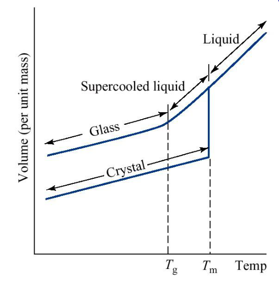
In the volume-temperature chart the crystal contracts abruptly at $T_m$, while the liquid continues as a supercooled liquid along the same slope and only bends to a smaller slope, that of the glass, at $T_g$. Below $T_g$ the atoms are frozen in the disordered arrangement of the liquid.
§ 20 Constituents of glasses [Session 16 Slide 28]
Silicate glasses contain three kinds of oxide [Session 16 Slide 28]:
| Group | Oxides | Share of the glass | Role |
|---|---|---|---|
| Glass formers | SiO₂, B₂O₃ | 50-99.5 % | build the network and show the rigid-liquid transition; SiO₂ through SiO₄⁴⁻ tetrahedra, B₂O₃ through flat BO₃³⁻ triangles |
| Glass modifiers | Na₂O, K₂O, CaO, MgO | 3-20 % | break the silicate lattice, lower $T_g$ (processing at lower temperatures) and the viscosity (easier moulding and working); they sit in interstitial positions, outside the network |
| Glass intermediates | Al₂O₃, PbO | 1-30 % | do not form glasses by themselves but can replace silica in the network and introduce special properties |
Silicate glasses have SiO₂ as former; borosilicate glasses have B₂O₃ + SiO₂. Among the intermediates, Al₂O₃ forms AlO₄ tetrahedra that replace SiO₄ tetrahedra; since Al³⁺ replaces Si⁴⁺, this produces charge defects, and it raises the strength at high temperature (aluminosilicate glasses). PbO modifies the optical properties, lowers the melting point (glass soldering) and protects from high-energy radiation. All glasses are at least 50 % silica, and the other oxides are added to modify their properties.
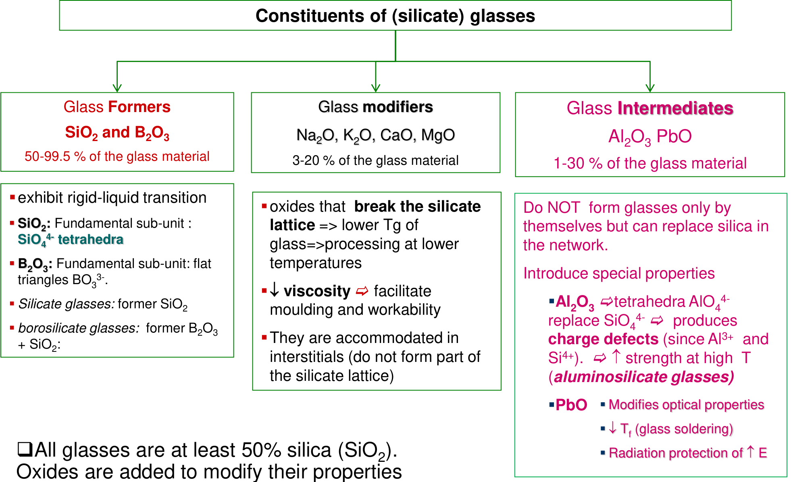
How a modifier works (extension): an oxide such as Na₂O brings one extra O²⁻ per two Na⁺. The extra oxygen breaks an Si-O-Si bridge into two non-bridging oxygens, each balanced by a Na⁺ ion. Fewer bridges mean a less connected network, which flows at a lower temperature: lower $T_g$, lower viscosity. The slide prints the aluminium unit as AlO₄⁴⁻ by analogy with SiO₄⁴⁻; with Al³⁺ and four O²⁻ the tetrahedron carries a charge of $3 - 8 = -5$, one more negative charge than the SiO₄ it replaces, which is the charge defect.
§ 21 Types of glasses [Session 16 Slide 29]
- Soda-lime glass (90 % of the total glass production): 60-75 % silica, 12-18 % soda (the slide writes Na₂CO₃, the soda of the batch) and 5-12 % lime, CaO. The modifiers lower the glass transition temperature from 1600 °C to 730 °C.
- Borosilicate glass: a silicate glass with at least 5 % boron oxide, which raises the glass transition temperature. Pyrex is used for high-temperature applications (ovenware, laboratory equipment).
- Lead glasses: low $T_g$, useful for soldering other glasses; they shield from radiation [Session 16 Slide 29].
| Glass type | SiO₂ | Na₂O | CaO | Al₂O₃ | B₂O₃ | Other | Characteristics and applications |
|---|---|---|---|---|---|---|---|
| Fused silica | > 99.5 | high melting temperature, very low expansion (thermal shock resistant) | |||||
| 96 % silica (Vycor) | 96 | 4 | thermal shock and chemically resistant: laboratory ware | ||||
| Borosilicate (Pyrex) | 81 | 3.5 | 2.5 | 13 | thermal shock and chemically resistant: ovenware | ||
| Container (soda-lime) | 74 | 16 | 5 | 1 | 4 MgO | low melting temperature, easily worked, durable | |
| Fiberglass | 55 | 16 | 15 | 10 | 4 MgO | easily drawn into fibres: glass-resin composites | |
| Optical flint | 54 | 1 | 37 PbO, 8 K₂O | high density and refractive index: optical lenses | |||
| Glass-ceramic (Pyroceram) | 43.5 | 14 | 30 | 5.5 | 6.5 TiO₂, 0.5 As₂O₃ | easily fabricated, strong, resists thermal shock: ovenware |
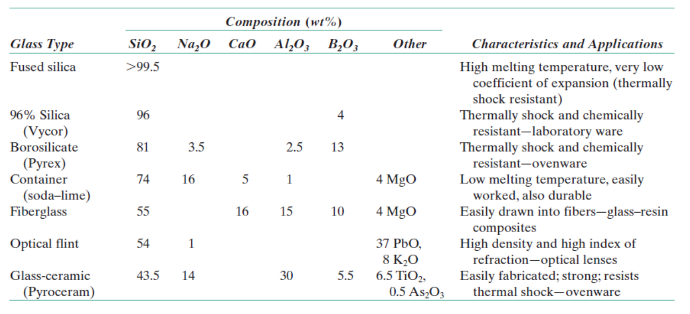
The table is Section 20 put into practice: the purest network (fused silica) is the most refractory and the most resistant to thermal shock, because its expansion is tiny, but it is hard to work; adding modifiers (soda-lime) makes the glass cheap and easy to shape at the cost of a larger expansion.
§ 22 Optical properties of glasses [Session 16 Slide 30]
Silicate glasses are transparent, and the range of transparency depends on the composition; "normal" glass is transparent in the visible part of the spectrum. The colour of a glass is due to dopants, and different ions give different colours [Session 16 Slide 30]. The table of the slide (metal ions as modifiers):
| Ion | C.I. | Colour | Ion | C.I. | Colour |
|---|---|---|---|---|---|
| Cr³⁺ | 6 | blue | Mn³⁺ | 6-8 | (not given) |
| Cr⁶⁺ | 6 | green | Fe²⁺ | 6 | blue-green |
| Cu²⁺ | 8 | blue-green | Fe³⁺ | 6-10 | light yellow |
| Cu⁺ | 6-8 | transparent | U⁶⁺ | 6 | light yellow |
| Co²⁺ | 6-8 | rose | V³⁺ | 6 | green |
| Ni²⁺ | 8 | yellow-green | V⁴⁺ | (not given) | blue |
| Mn²⁺ | 6 | light orange |
§ 23 Properties of glasses [Session 16 Slide 31]
| Group | Properties on the slide |
|---|---|
| Mechanical | brittle; strength greatly influenced by defects and flaws; Young's modulus depends on composition, surface imperfections, volume and temperature; low Weibull modulus; low mechanical strength |
| Electrical | generally insulators, $\sigma \approx 10^{-10}$ to $10^{-20}$ (Ω·cm)⁻¹; high resistivity and dielectric strength; the conductivity increases with temperature and with the concentration of modifiers |
| Thermal | low thermal conductivity and high thermal expansion coefficient, so low thermal shock resistance |
| Other | resistant to chemical attack |
The conductivity of a glass is ionic: the modifier cations (Na⁺, K⁺) sit loosely in the network and can hop under a field, more easily at higher temperature (extension, consistent with the ionic conduction of Topic 6). The table of the slide gives the thermal shock that common glasses survive, assuming a tensile failure stress of 69 MPa:
| Material | $\alpha$ (°C⁻¹) | Thermal shock to failure |
|---|---|---|
| Soda-lime-silicate | $10^{-5}$ | 80 °C |
| Sodium borosilicate (Pyrex type) | $3\times10^{-6}$ | 270 °C |
| Fused silica | $0.5\times10^{-6}$ | 1600 °C |
| Lithia-alumina-silicate glass-ceramic (Pyroceram type) | $1.2\times10^{-6}$ | 670 °C |
| Transparent lithia-alumina-silicate glass-ceramic (Visions type) | $0.6\times10^{-6}$ | 1330 °C |
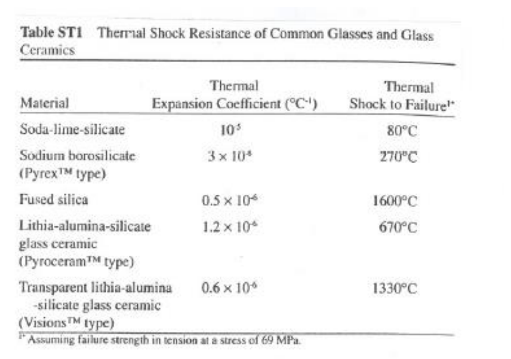
In the scanned table the exponents of the first two expansion coefficients are hard to read (they look like $10^{5}$ and $3\times10^{4}$, with no minus sign; this is a reading of the scan); they are $10^{-5}$ and $3\times10^{-6}$ °C⁻¹ (the others are printed with $10^{-6}$, and a positive exponent is not a physical expansion coefficient). The slide writes the conductivity unit as Ωcm⁻¹; the unit of conductivity is (Ω·cm)⁻¹.
The table follows the thermal stress of Section 15: the temperature jump a glass survives grows as $\alpha$ falls, from 80 °C for soda-lime glass to 1600 °C for fused silica, whose $\alpha$ is twenty times smaller.
§ 24 Glass-ceramics [Session 16 Slide 32]
Glass-ceramics are polycrystalline materials produced by the controlled crystallization (devitrification) of a base glass, which gives a fine, uniform dispersion of crystals throughout the bulk. The common commercial composition is the Li₂O·Al₂O₃·nSiO₂ system (LAS system). Their thermomechanical durability lets them sustain repeated and quick temperature changes up to 800-1000 °C [Session 16 Slide 32].
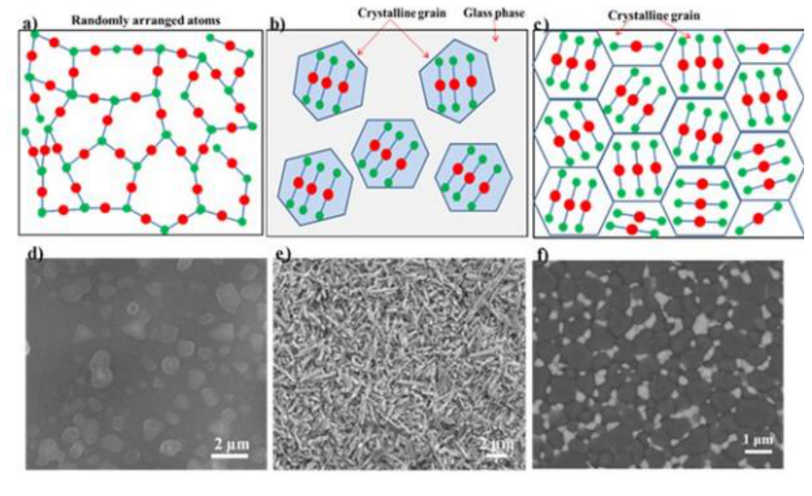
The figure compares the three microstructures: randomly arranged atoms in a glass, crystalline grains embedded in a glass phase in a glass-ceramic, and crystalline grains only in a ceramic. The glass-ceramic is shaped as a glass (easy and cheap), then crystallized; the fine crystals of the LAS system have a very low expansion, which is the reason for its thermal shock resistance (0.6 to $1.2\times10^{-6}$ °C⁻¹ in the table of Section 23). The cooktop of the slide is the everyday application.
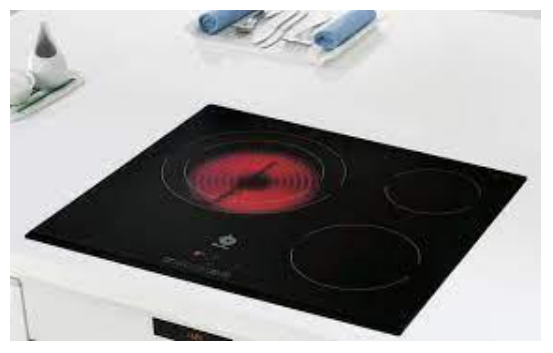
Part II — Processing and Applications of Ceramic Materials (Session 18, Slides 1–43)
§ 25 Ceramic materials and why they need their own processing [Session 18 Slides 1-4]
Slide 1 gives the agenda: processing of ceramics (powder manufacturing, powder conditioning, shaping-forming, drying and sintering), processing of glasses, and applications and examples. Slides 2 and 3 show ceramic products: pottery (clay), Duralex (glass-ceramic), Pyrex (borosilicate), bricks and refractory ceramics; tempered car glass, microelectromechanical systems (MEMS), glass wool insulation, optical fibre (SiO₂) and ceramic braces.
The high melting point and the hardness and brittleness of ceramics demand adapted processing routes: a ceramic cannot be melted and cast economically, and it cannot be forged or rolled because it does not deform plastically. The final properties classify the materials as traditional ceramics, advanced or technical ceramics (oxides and non-oxides) and glasses [Session 18 Slide 4].
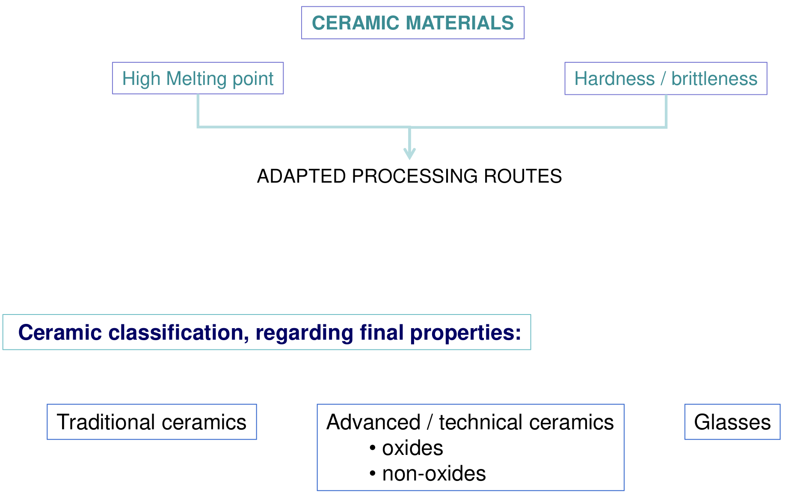
§ 26 The processing route and the raw materials [Session 18 Slide 5]
Every ceramic part follows the same chain: raw materials → powder conditioning → shaping → sintering → machining [Session 18 Slide 5]. The raw materials differ by family. The traditional ceramics (low cost) use natural minerals: clay, Al₂O₃·SiO₂·H₂O; silica, SiO₂; feldspar, K₂O·Al₂O₃·6SiO₂. The advanced ceramics start from synthesized powders, because their properties depend on purity and particle size.
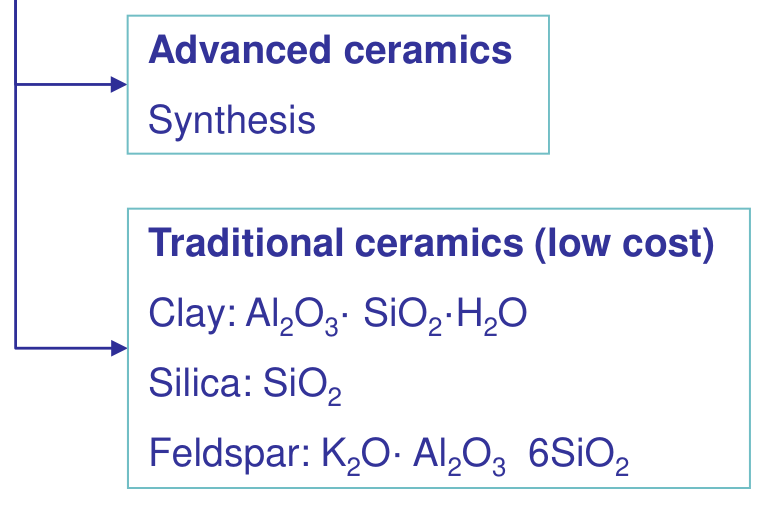
§ 27 Powder manufacturing [Session 18 Slide 6]
The first step is to obtain the ceramic powder. As an example, SiC is made by the Acheson process, at 1600-2500 °C in an electric resistance furnace for 36 h [Session 18 Slide 6]:
The positive $\Delta H$ (the slide writes "H=528KJ/mol") means the reaction absorbs heat, which is why it needs the electric furnace for such a long time. The routes of synthesis of advanced (structural) ceramic powders listed on the slide are oxidation and reduction reactions, thermal decomposition, liquid-solid reactions, solid-solid reactions, hydrothermal synthesis, liquid-phase synthesis (precipitation, hydrolysis, evaporation) and other methods. The sketch of the slide shows the liquid-phase route: a solution becomes a suspension, then a precipitate settles under the supernate.
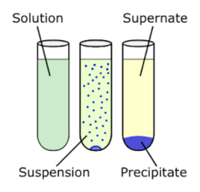
§ 28 Powder conditioning: milling, additives and granulation [Session 18 Slides 7-8]
Milling (wet or dry) reduces the powder to small particles: (a) roll crushing (dry), (b) ball milling (wet or dry), (c) hammer milling (dry). The powder is then mixed with additives: agglutinants (binders), lubricants, wetting agents, plasticizers and deflocculants [Session 18 Slide 7].
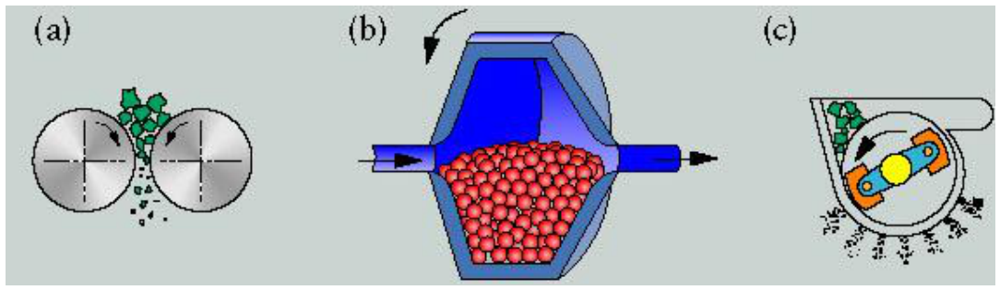
Fine particles sinter better (Section 38), but they flow badly and fill a die unevenly. Granulation solves this: a suspension or slurry (60-70 % solid, with agglomerates and water) of adequate viscosity is pulverized and dried with hot gases (spray drying), giving a granulated powder of spherical particles (pellets) [Session 18 Slide 8]. The droplets go through spraying, wetting (liquid bridges between particles), solidifying (solid bridges) and drying, which leaves a "snowball" agglomerate.
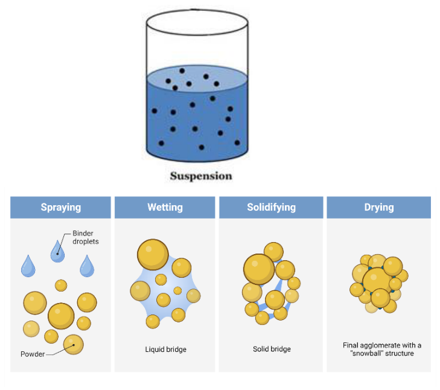

§ 29 Classification of the shaping methods [Session 18 Slide 9]
The shaping methods are grouped by the state of the powder [Session 18 Slide 9]:
| Group | Methods |
|---|---|
| Dry shaping | uniaxial pressing, isostatic pressing |
| Wet (colloidal) shaping | slip casting, tape casting |
| Plastic shaping (feedstock) | extrusion, injection moulding |
| Free-form fabrication | material extrusion, material jetting, binder jetting, photopolymerization, powder bed fusion, laminated object manufacturing |
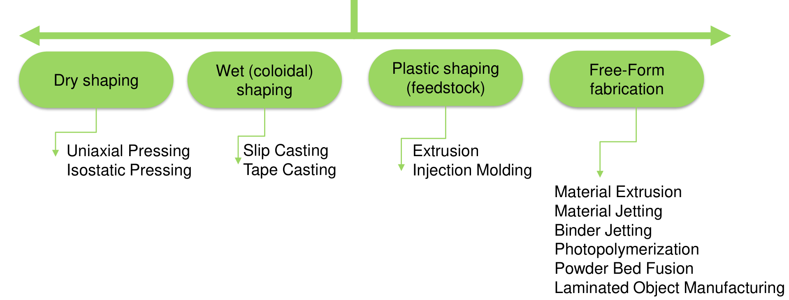
§ 30 Dry shaping: uniaxial pressing [Session 18 Slides 10-11]
In uniaxial pressing the powder is charged into a die, compacted between an upper and a lower punch, and the pressed part is ejected. It is good for complicated pieces and for production speed. The variables to control are a good filling of the die, a good compressibility, and the use of coagulants, additives and agglomerates. Examples: ceramic nozzles and alumina electrical components [Session 18 Slide 10]. Slide 11 links a video of the process (listed at the end of Part II).
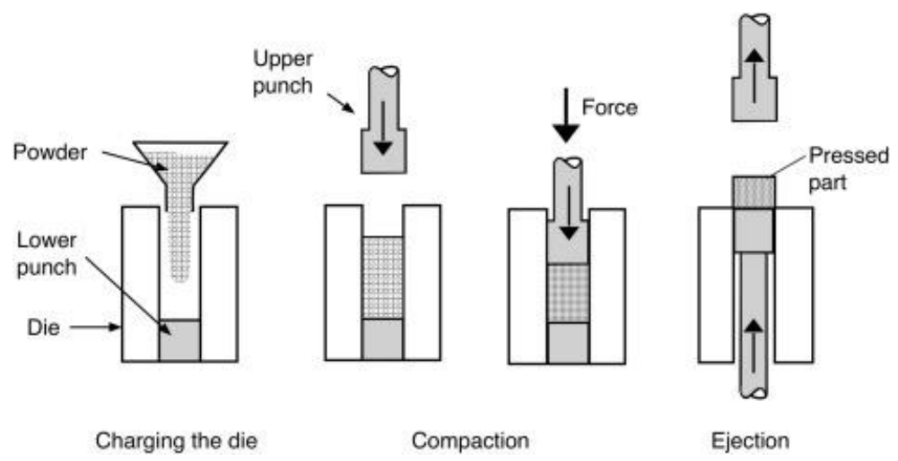
Pressing along one axis has a limit (extension, consistent with the advantages of isostatic pressing below): friction against the die wall makes the density of the compact uneven, higher near the moving punch, and an uneven green density shrinks unevenly during sintering.
§ 31 Dry shaping: cold isostatic pressing [Session 18 Slides 12-13]
Cold isostatic pressing (CIP) applies a hydrostatic pressure, through a fluid, to dry ceramic powder [Session 18 Slide 12]:
- Wet bag: the pre-shaped sample is loaded in a flexible mould (silicone, polyurethane), evacuated, immersed in the hydraulic fluid, and pressurized.
- Dry bag: the powder is loaded in a thick rubber bag with a rigid support and then pressurized; it is easier to automate.
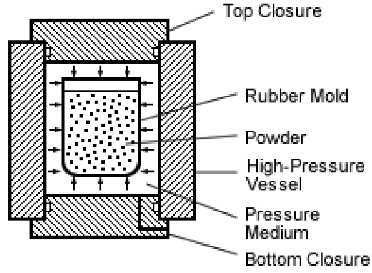
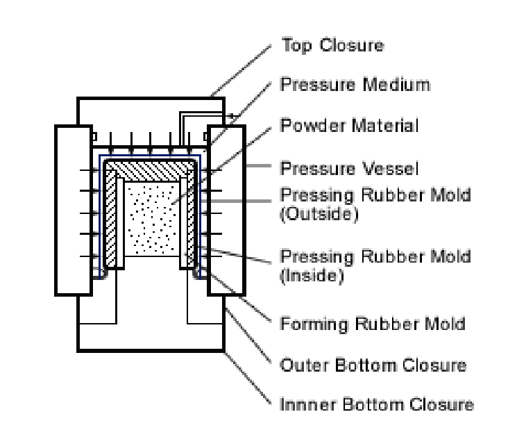
The dry bag is used for the insulating part of spark plugs: powder filling, compaction, depressurization and withdrawal of the compact [Session 18 Slide 13].
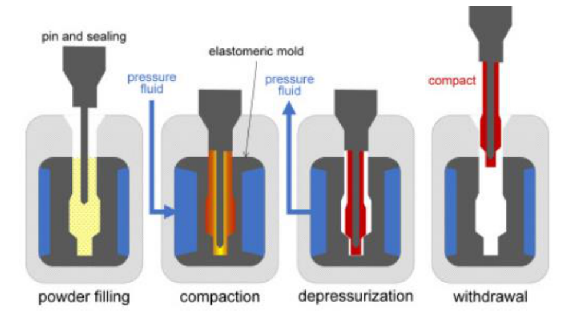
| Advantages | Drawbacks |
|---|---|
| no granulated powder required | slow and discontinuous process |
| uniform components, uniform density and properties | low dimensional accuracy |
| no ejection cracks, no lubricant addition | low surface finish |
| high green strength (the part can be machined), low porosity |
The uniform density comes from the pressure acting equally in every direction, with no die wall to rub against; the price is the flexible mould, which cannot give accurate dimensions or a fine surface.
§ 32 Wet (colloidal) shaping: slips [Session 18 Slide 14]
A slip is a suspension of colloidal ceramic particles in an immiscible liquid, generally water. Stable colloidal suspensions are used for forming and shaping ceramic parts; in an unstable colloid the particles aggregate and sediment. A good slip is chemically inert, has the optimum flowability (low viscosity), the maximum possible density, the ability to detach from the mould, low shrinkage during drying and a low-turbulence (Newtonian) flow [Session 18 Slide 14].
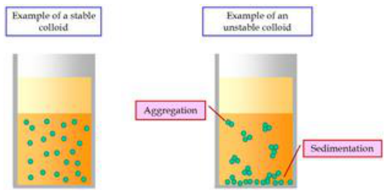
§ 33 Slip casting [Session 18 Slides 15-17]
In slip casting the slip is poured into a porous mould of plaster or alabaster, and the mould extracts the carrier fluid by capillarity, so a layer of powder deposits on its wall. The steps are: (a) the porous plaster mould, (b) pouring of the slip, of which the mould absorbs some of the water, (c) the remaining suspension is poured out, (d) trimming (the slide labels the knife "cuchilla de recorte"), and (e) the part is removed, ready for firing. Uses: bathroom ware, plant pots, fountains [Session 18 Slide 15].
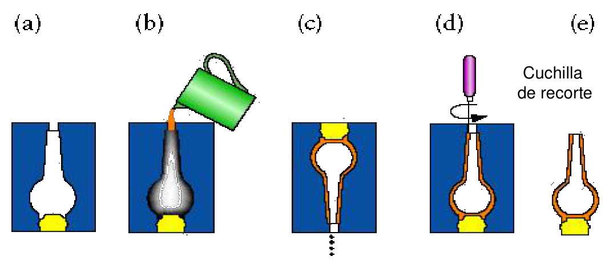
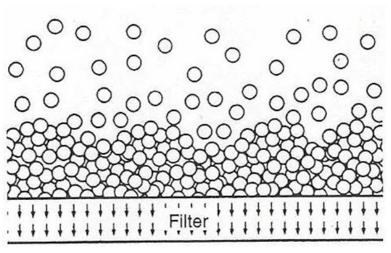
| Advantages | Drawbacks |
|---|---|
| big components, complex shapes | low production rate |
| cold processing, low-cost equipment | maximum thickness 10 mm, low dimensional accuracy |
The thickness limit has a physical cause (extension): the water must flow through the layer already deposited, and as the layer thickens it filters more slowly, so the growth rate falls with time. Pressure slip casting pushes the slip into the mould with an applied pressure, which shortens the processing time and allows thicker, more reliable components [Session 18 Slide 16]. The chart of the slide (SiC) shows the wall thickness growing with the casting time, faster at higher pressure (1.7, 3.4, 6.8 and 10.2 MPa), reaching about 9 mm in 50 s at the highest pressure.

Slide 17 links a video of slip casting.
§ 34 Tape casting [Session 18 Slide 18]
In tape casting (doctor blade) a ceramic slip is cast onto a flat moving belt; a blade sets the thickness, and the tape dries in a chamber before it is wound on a spool. It produces ceramic layers and sheets thinner than 1.5 mm, in a continuous process with acceptable accuracy. Applications: multilayer capacitors (with a metallic conductor phase, Ag, Au, Cu, sintered in one process) and fuel-cell components [Session 18 Slide 18].
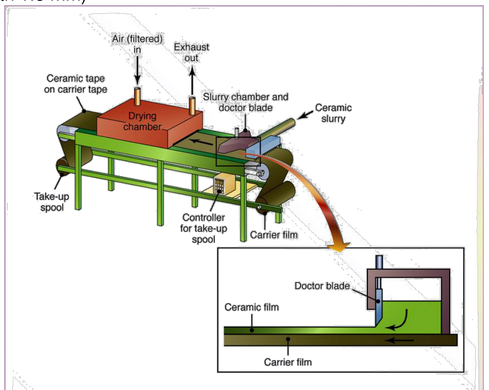
§ 35 Plastic shaping: feedstock and extrusion [Session 18 Slides 19-21]
For plastic shaping the ceramic powder is mixed with a binder (wax, thermoplastic, additives) to produce a feedstock that flows like a polymer [Session 18 Slide 19].
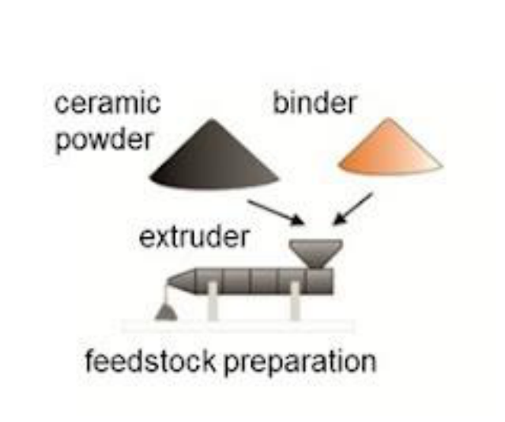
In extrusion the feedstock is fed into the extruder hopper and forced through the shaping die by a ram, screw or piston; the extruded material emerges with a uniform cross-section. A variant is extrusion and jiggering: an extruded slug is moulded as a bat on a revolving mould [Session 18 Slide 20].
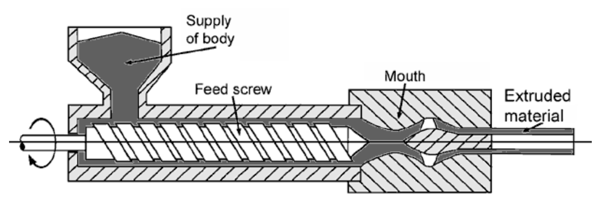
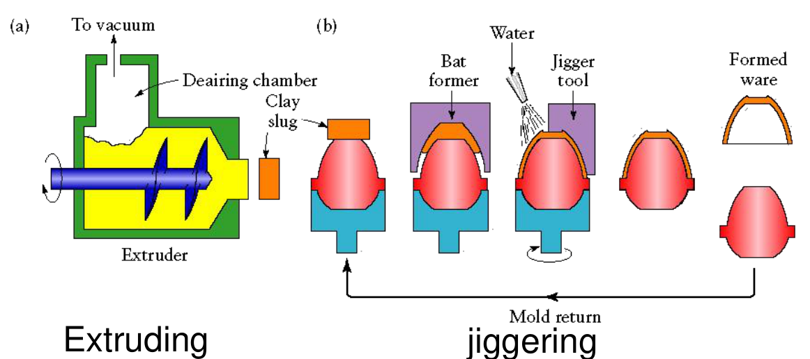
| Advantages | Drawbacks |
|---|---|
| hollow, small-diameter components | constant transverse section |
| high production rate, high reproducibility for constant sections | limited thickness |
| cold processing, low-cost equipment |
Extrusion suits small-section components (but above 15 mm in the smallest dimension) and axisymmetric shapes, and it is appropriate for technical ceramics (alumina, zirconia, silicon nitride, silicon carbide). Applications: refractory tubes for thermocouples, furnaces and catalysts, and bricks [Session 18 Slide 21].
§ 36 Injection moulding [Session 18 Slide 22]
Injection moulding follows five steps [Session 18 Slide 22]:
- The ceramic powder is mixed with a binder or wax to get the feedstock.
- The feedstock is forced through the shaping die by a ram, screw or piston.
- The injection-moulded material emerges as a product, the green part.
- The binder is removed by pyrolysis, thermal evaporation or solvent washing, giving the brown part.
- The part is sintered.
It gives good accuracy but it is expensive, so it is used for high-technology parts such as rocket engine components. The slide shows an injection-moulded turbocharger in the green and in the sintered state.
§ 37 Drying and debinding [Session 18 Slides 23-24]
After shaping, the green part must lose its liquid or binder before sintering: wet-processed parts are dried, extruded and injection-moulded parts are debinded, and either way the result is the brown part. It is then sintered without pressure or with pressure (hot pressing, hot isostatic pressing, field-assisted sintering) [Session 18 Slide 23].
Drying (wet processing) removes the water. Debinding (extrusion, injection moulding) removes the polymeric binder, usually in two steps: solvent debinding and thermal debinding. It is an important stage: cracking, distortion or warping can occur, so slow heating and a controlled atmosphere are necessary. A shrinkage of 15-20 % can occur during drying and debinding [Session 18 Slide 24].
The shrinkage is the space the water or binder occupied between the particles: as it leaves, the particles move closer. If the outside dries faster than the inside, the surface shrinks first and is pulled into tension by the core, which is how drying cracks form, and the reason for slow, controlled heating.
§ 38 Sintering [Session 18 Slide 25]
Sintering is heating the compact part to a high temperature below the melting point, where strong bonds develop between particles through diffusion processes; the ceramic part gets its strength and hardness, and densification and shrinkage occur. The driving force is the lowering of the surface energy, helped by the curvature of the particle surfaces, an externally applied pressure or a chemical reaction [Session 18 Slide 25]. The material moves from a source to the neck that grows between two particles:
| Transport mechanism | Material source | Material sink |
|---|---|---|
| 1. Surface diffusion | grain surface | neck |
| 2. Lattice diffusion | grain surface | neck |
| 3. Vapour transport | grain surface | neck |
| 4. Grain boundary diffusion | grain boundary | neck |
| 5. Lattice diffusion | grain boundary | neck |
| 6. Plastic flow | bulk grain | neck |

The figure separates the non-densifying mechanisms (1 to 3) from the densifying ones (4 to 6). The difference is where the material comes from. If it comes from the surface of the grains, it only moves matter around the pore: the neck grows and the part gets stronger, but the centres of the particles do not approach and the part does not shrink. If it comes from the grain boundary or the bulk between the particles, the centres move together and the pores close: the part densifies and shrinks. The stages run from loose powder through the initial (necks), intermediate (connected pores) and final stage (isolated pores). The diffusion of Topic 3 is the engine of the whole process, which is why sintering needs high temperature and time. The alumina fibre guide of the slide, machined in the green state and then sintered, shows the shrinkage.
§ 39 Factors of sintering and liquid-phase sintering [Session 18 Slide 26]
The factors that affect sintering are the temperature, the time, the green density and its uniformity, the atmosphere, the impurities, the particle size distribution and the particle size [Session 18 Slide 26]. Sintering is classified as solid state or liquid phase, and liquid-phase sintering as permanent or transient (the slide marks "< 1 % vol liquid phase").
In liquid-phase sintering a small amount of liquid enhances the diffusional mechanisms that drive densification: capillary forces give a rapid initial rearrangement of the particles, and mass transport through the liquid is generally orders of magnitude faster than through the solid. The sequence of the slide is: initial state (mixed powders with an additive), rearrangement, solution-reprecipitation, and final densification.
The particle size enters through the driving force (extension): the surface energy per unit volume of powder grows as the particles get smaller, and the diffusion distances shrink, so fine powders sinter faster and at lower temperature. That is why the milling of Section 28 matters.
§ 40 Pressure-assisted sintering: hot isostatic pressing [Session 18 Slide 27]
In hot isostatic pressing (HIP) the fluid is an inert gas. The stages are: (1) encapsulating the ceramic powder in a metallic mould, (2) evacuating the mould, and (3) placing it in a furnace (autoclave) at a pressure up to 15 bar and a temperature up to 2000 °C [Session 18 Slide 27].
| Advantages | Drawbacks |
|---|---|
| very good pressure distribution, uniform properties | very high cost of the furnace |
| versatility of shapes | scarce dimensional accuracy |
| components of high hardness (mechanical properties) | slow, discontinuous process; inert gas consumption |
The pressure adds a driving force to the surface energy: it squeezes the remaining pores shut, so the part reaches almost full density at a lower temperature or a shorter time, with less grain growth.
§ 41 Field-assisted sintering: spark plasma sintering [Session 18 Slide 28]
In field-assisted sintering techniques (FAST), or spark plasma sintering (SPS), the powder is placed in a mould (usually graphite) and pressed, and a pulsed electric current passes directly through the mould and/or the sample, so Joule heating heats the sample directly. Heating rates reach 1000 K/min, the cycles last minutes, and the temperatures and mould pressures are lower than in conventional techniques [Session 18 Slide 28].
| Advantages | Drawbacks |
|---|---|
| fast and uniform sintering | simple symmetrical shapes only |
| different materials can be processed | slow, discontinuous process |
| low grain growth | expensive |
Low grain growth follows from the short time at temperature: densification is completed before the grains have time to coarsen, and a fine grain size gives a stronger ceramic.
§ 42 Additive manufacturing of ceramics [Session 18 Slide 29]
The slide shows six additive processes, the free-form fabrication of Section 29: powder bed fusion (a laser sinters a powder bed), binder jetting (a binder is jetted onto a powder bed), photopolymerization (a laser cures a resin loaded with ceramic), material extrusion (a filament is fused), material jetting (a suspension is jetted) and laminated object manufacturing (sheets are laser-cut and stacked) [Session 18 Slide 29]. Except for direct laser sintering, the printed part is a green part that is debinded and sintered like a moulded one (extension).
§ 43 Glasses: viscosity and the reference points [Session 18 Slide 30]
Glasses are amorphous materials of different compositions (SiO₂ or B₂O₃, for example). They are undercooled liquids: their viscosity increases as the temperature decreases. The glass transition temperature depends on the cooling rate, $T_g = f(\text{cooling rate})$, and the viscosity $\eta$ depends on temperature, composition and thermal history [Session 18 Slide 30]. The working of glass is described by reference points of viscosity:
| Point | $\eta$ (P) | $\eta$ (Pa·s), extension |
|---|---|---|
| Strain point | $3\times10^{14}$ | $3\times10^{13}$ |
| Annealing point | $10^{13}$ | $10^{12}$ |
| Softening point | $4\times10^{7}$ | $4\times10^{6}$ |
| Working point | $10^{4}$ | $10^{3}$ |
| Melting point | $100$ | $10$ |
(1 P = 0.1 Pa·s; the conversion is an extension.)

The chart places these points on the curves of four glasses. Soda-lime glass reaches its working point near 1000 °C, borosilicate a little higher, and fused silica only above about 1600 °C, which is why pure silica is so hard to shape (Section 21). Between the softening and the working point lies the working range, where the glass is shaped; below the annealing point internal stresses can no longer relax in a practical time.
The volume-temperature chart (Fig. 18.2 of the slide) shows why $T_g$ depends on the cooling rate: a slower cooling lets the undercooled liquid follow its equilibrium line further before it freezes, so the glass forms at a lower $T_g$ and with a smaller volume.
§ 44 Processing of glass [Session 18 Slides 31-32]
Glass is processed by raising it above $T_g$ and shaping it. The products are [Session 18 Slide 31]:
- Flat sheets or plates (windows, glass doors), by the float process: molten glass flows from the furnace onto a bath of molten tin under a controlled atmosphere and then through the lehr (annealing oven) on rollers.
- Rods or tubing (neon lights, chemical and decorative ware), by drawing the glass over a rotating mandrel.
- Discrete products (bottles, vases, headlights), by blowing and by pressing in moulds.
- Glass fibres, to reinforce composite materials or as thermal insulation (Section 46).
The float process gives flat, smooth surfaces because the glass rests on a liquid metal that is itself perfectly flat. Slide 32 links a video of glass bottle production.
§ 45 Tempered glass [Session 18 Slides 33-34]
Tempered glass is glass heated above $T_g$ but below the softening point and then cooled rapidly [Session 18 Slide 33]:
- The surface cools below $T_g$ first and contracts.
- The interior cools next and contracts, drawing the exterior into compression.
- Tensile stresses develop in the interior and compressive stresses at the surface.
- The compressive stresses at the surface increase the strength, because they prevent the growth of surface cracks.
Examples: car side windows and safety glasses.
The logic is that of Sections 12 and 13: glass breaks from surface flaws loaded in tension. A tempered surface starts in compression, so an applied tensile stress must first cancel that compression before any crack can open, and the strength rises by the size of the residual stress. The interior carries the balancing tension, but it has few flaws. If a crack does reach the core, the stored energy shatters the pane into small blunt pieces, which is why it is called safety glass. Slide 34 links a video of tempered glass.
§ 46 Glass fibres [Session 18 Slide 35]
Glass wool, used for thermal insulation, is made of short glass fibres (20-30 mm) produced by a centrifugal process: molten glass is spun from a rotating head through multiple orifices [Session 18 Slide 35]. An optical glass fibre has a core of silica doped with germanium dioxide (GeO₂) and alumina to increase its refractive index, and a cladding of pure silica or silica doped with fluorine or boron to decrease it. Light is guided because the core has the higher refractive index (total internal reflection at the core-cladding boundary, extension). The slide compares the thickness of a human hair, an optical fibre and a glass fibre.
§ 47 Applications: the thermal protection system of the Space Shuttle [Session 18 Slides 36-38]
The Space Shuttle was covered with about 24 000 ceramic tiles, with a specific material for each position. The materials are ceramic tiles (HRSI, LRSI, FRCI), carbon reinforced with carbon (RCC) and felt covered with silicone (FRSI, FIB, AFRSI) [Session 18 Slide 36].
| Name | Temperature (°C) | Composition | Position | Colour |
|---|---|---|---|---|
| Felt reusable surface insulation (FRSI) | 400 | aramid (Nomex) felt blankets with a white-pigmented silicone elastomer coating | upper wing surfaces, upper payload bay doors, parts of the mid and aft fuselage sides | white flexible fabric (mostly replaced by FIB) |
| Low-temperature reusable surface insulation (LRSI) | 400-650 | tiles of high-purity silica fibres, coated with borosilicate glass | upper fuselage, upper wing near the leading edge, areas of the forward, mid and aft fuselage, vertical tail | white, by design, to manage heat in direct sunlight |
| High-temperature reusable surface insulation (HRSI) | 650-1260 | tiles of high-purity silica fibres (90 % porous, LI-900), coated with borosilicate glass with SiB₄ added | orbiter under surfaces, vertical stabilizer leading edge, areas of the upper forward fuselage | black; low thermal conductivity; 70 % of the surface area |
| Reinforced carbon-carbon (RCC) | 1650 | pyrolytic carbon reinforced with carbon, coated with SiC | nose cap, wing leading edges | light grey |
The table is printed on Slide 37 (it writes "borosilicatesilicate" for borosilicate in the LRSI row).
Slide 38 maps the protection of Orbiter 102 and tabulates the area and the weight of each element (read from a 300 dpi render of the slide):
| Element | Area, m² (ft²) | Weight, kg (lb) |
|---|---|---|
| FRSI | 332.7 (3581) | 532.1 (1173) |
| LRSI | 254.6 (2741) | 1014.2 (2236) |
| HRSI | 479.7 (5164) | 4412.6 (9728) |
| RCC | 38.0 (409) | 1697.3 (3742) |
| Miscellaneous | 918.5 (2025) | |
| Total | 1105.0 (11 895) | 8574.7 (18 904) |
The footnote says that the weights include bulk insulation, thermal barriers and closeouts.
The tables explain each choice with the ideas of Part I. The HRSI tile is 90 % porous silica: silica has a very low expansion (so it survives the thermal shock of re-entry, Section 23) and the pores make its conductivity tiny, so the aluminium structure underneath stays cool; its black borosilicate coating radiates heat away. The coating is a glass, so it seals the porous tile. Where the temperature exceeds what silica can stand (1650 °C at the nose and leading edges), RCC takes over, protected from oxidation by its SiC coating. The weights show the cost of the hottest areas (extension, computed from the table): RCC weighs $1697.3/38.0 = 44.7$ kg/m², against $4412.6/479.7 = 9.2$ kg/m² for HRSI and $532.1/332.7 = 1.6$ kg/m² for FRSI.
§ 48 Applications: engine components and thermal barrier coatings [Session 18 Slides 39-41]
Engineering ceramics (Al₂O₃, ZrO₂, Si₃N₄, SiC) are used for high-strength alumina components for high temperature, gas-turbine rotors of silicon nitride, and ceramic members made by 3D additive manufacturing [Session 18 Slide 39]; the slide writes "Si3Ni4" for Si₃N₄.
Slide 40 shows the section of the Rolls-Royce AMED gas turbine engine (from H. M. Flower, High Performance Materials in Aerospace, Chapman & Hall, 1995), with the components that can be ceramic: the shroud ring, the HP nozzle guide vanes, gas bearings, ceramic rolling elements in high-speed bearings (increased life), ceramic HP turbine blades and blisks, and ceramic thermal barriers (increased life). The slide also lists the combustor, support struts, flameholder, re-heat shields, nozzle, turbine aerofoils, turbine casing, exhaust cone and jet pipe [Session 18 Slide 40].
A thermal barrier coating (TBC) of ZrO₂ stabilized with Y₂O₃ (YSZ) protects turbine blades [Session 18 Slide 41]. The coating is a thin layer of low-conductivity ceramic on the metal blade, so the gas can be hotter than the metal can stand while the blade itself stays within its limit. YSZ is the fluorite-type oxide of Section 6.
§ 49 Applications: traditional ceramics [Session 18 Slide 42]
Slide 42 maps the applications of traditional ceramics: carbon and graphite, refractories, electrical ware, building materials (cements, lime, plasters), flooring, earthenware and whiteware, glasses, abrasives, cutting tools and structural shapes. The raw materials are again clay (Al₂O₃·SiO₂·H₂O), silica (SiO₂) and feldspar (K₂O·Al₂O₃·6SiO₂), and electrical porcelain is made of about 50 % clay (Al₂O₃·2SiO₂·2H₂O), 25 % SiO₂ and 25 % feldspar [Session 18 Slide 42]. Each raw material has a job (extension): the clay gives plasticity for shaping, the feldspar melts on firing and forms a glassy bond (liquid-phase sintering, Section 39), and the silica is a filler that limits shrinkage.
§ 50 Review questions [Session 18 Slide 43]
The slide ends with seven questions. Each one is answered by the sections named after it:
- How do defects introduced during manufacturing (porosity, cracks) affect the fracture toughness of ceramics, and which process would minimize them? (Sections 12-14, 31, 40-41.)
- Which process would produce a thin, flexible ceramic substrate of uniform thickness and smooth surfaces for electronics? (Section 34.)
- Which process would give a complex-shaped ceramic part with high dimensional accuracy for biomedical implants, such as dental crowns? (Sections 36 and 42.)
- In which processes is feedstock used, and what is the purpose of the binder? (Sections 35-37.)
- What are the main differences between dry pressing and slip casting? (Sections 30-33.)
- What are the key factors to consider when processing glass? (Sections 43-45.)
- Explain the sintering process and its role in consolidation and densification. (Sections 38-41.)
Videos linked in the slides
These are references printed on the slides, not content of the portal:
- Session 18, Slide 11 (uniaxial pressing): https://www.youtube.com/watch?v=4zXkn9iyC0c&ab_channel=GKNPowderMetallurgy
- Session 18, Slide 17 (slip casting): https://www.youtube.com/watch?v=FZzOTX9Ihqs&ab_channel=ShaneeLouw
- Session 18, Slide 32 (glass bottle production): https://www.youtube.com/watch?v=A_M8WBJMcM0&ab_channel=DiscoveryUK
- Session 18, Slide 34 (tempered glass): https://www.youtube.com/shorts/YNIzDtvHlu4
§ 51 Collected formulas of the topic
Everything below is taken from the sections above; it is a quick reference, not new content.
| Quantity | Formula | Where |
|---|---|---|
| Ionic character (Pauling) | $100\{1 - e^{-(X_A - X_B)^2/4}\}$ | Section 3 |
| Radius-ratio limits | 0.155, 0.225, 0.414, 0.732 for C.I. 3, 4, 6, 8 | Section 4 |
| Contact in rock salt | $a = 2(r_C + r_A)$ (extension) | Section 5 |
| Contact in zinc blende | $a\sqrt3/4 = r_C + r_A$ (extension) | Section 5 |
| Contact in perovskite (A-O) | $a\sqrt2 = 2(r_A + r_O)$ (extension) | Section 7 |
| Brittle fracture | $\sigma_y = UTS = \sigma_{fracture}$ | Section 12 |
| Modulus of rupture | $3F_fL/(2bd^2)$ (rectangle), $F_fL/(\pi R^3)$ (circle) | Section 13 |
| Weibull distribution | $f = (k/\lambda)((x-x_0)/\lambda)^{k-1}e^{-((x-x_0)/\lambda)^k}$ | Section 14 |
| Thermal stress, thermal shock | $\sigma = E\alpha\Delta T$, $\ TSR = \sigma_f k/(E\alpha_l)$ | Section 15 |
| Acheson process | $\text{SiO}_2 + 3\text{C} \rightarrow \text{SiC} + 2\text{CO}$, $\Delta H = 528$ kJ/mol | Section 27 |
| Glass viscosity points | strain $3\times10^{14}$ P, annealing $10^{13}$ P, softening $4\times10^{7}$ P, working $10^{4}$ P, melting 100 P | Section 43 |